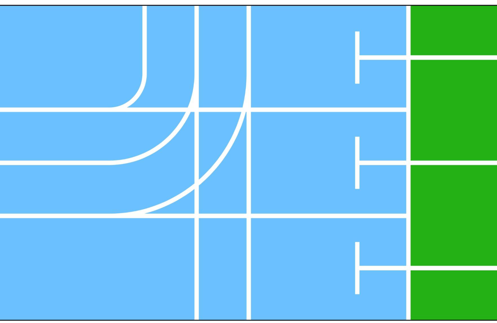

International Standards · ISE
Edition 2027 · effective 1 January 2027 · current
Retrieved on 26 November 2026 from https://www.wada-ama.org/sites/default/files/2025-12/2027_international_standard_for_education_ise.pdf
Editions: 2027 (current) · 2021
p. 1
2027 International Standard for Education
revel

p. 2
International Standard for Education
The World Anti-Doping Code International Standard for Education is a mandatory International Standard developed as part of the World Anti-Doping Program. It was developed in consultation with Signatories, public authorities, Athletes, and other relevant stakeholders.
The International Standard for Education was first adopted and approved by the WADA Executive Committee at the fifth World Conference on Doping in Sport in Katowice on 7 November 2019. A revised version was approved by the WADA Executive Committee at the sixth World Conference on Doping in Sport in Busan on 5 December 2025 and is effective as of 1 January 2027.
Published by:
World Anti-Doping Agency Stock Exchange Tower 800 Place Victoria (Suite 1700) PO Box 120 Montreal, Quebec, Canada H3C 0B4
www.wada-ama.org
Tel:
Fax:
+1 514 904 9232
+1 514 904 8650
E-mail:
code@wada-ama.org
p. 3
p. 4
p. 5
PART ONE: INTRODUCTION, PURPOSE, CODE PROVISIONS AND INTERPRETATION
1.0 Introduction and Scope
The International Standard for Education is a mandatory element of the World Anti-Doping Program.
It is recognized that the vast majority of Athletes wish to compete clean, have no intention to dope, and have the right to fair competition.
Athletes have a right to Education as identified in the Athlete's Anti-Doping Rights Act. Athletes and Athlete Support Personnel also have a right to Education as per the UN Sustainability Goal 4 - Quality Education.
Anti-Doping Organizations are contributors to clean sport and are obliged to ensure Education forms a core component of their anti-doping programs so that such programs are balanced and focus on Prevention.
The benefits of Education and compliance with the Code and International Standard for Education are significant for Athletes, Athlete Support Personnel, organizations, and the integrity of sport. These benefits may include but are not limited to:
- Supporting Athletes. Reinforcement of values, awareness of the rules, access to information, and participating in Education can help Athletes develop the behaviors they need to train and compete clean.
- Protecting Athlete wellbeing and health. Adhering to anti-doping rules protects Athletes' health, the fundamental rationale for the Code. Prohibited Substances and Methods can have severe health consequences.
- Preserving the right to fair Competition. Educated Athletes and Athlete Support Personnel are better prepared to train and compete clean, abide by the spirit of sport and contribute to a level playing field.
- Building a clean reputation. Educated and compliant Athletes, Athlete Support Personnel and organizations maintain their reputations and their integrity, preventing tarnished reputations and long-lasting negative consequences of doping.
- Promoting fair play and integrity. Education contributes to a level playing field by preventing doping practices. It helps to maintain the integrity of sport Competitions by instilling and reinforcing the value of fair play in Athletes and Athlete Support Personnel.
- Earning public trust. Compliance with the Code and the International Standard for Education enhances public trust in sport. When Athletes, Athlete Support Personnel, and organizations follow anti-doping regulations, fans and sponsors have confidence in the authenticity of results.
- Facilitating global harmonization. The International Standard for Education establishes the framework that ensures consistency of clean sport Education practices worldwide for Athletes and Athlete Support Personnel.
p. 6
Education, as one Prevention strategy defined in the Principles and Purpose section of the Code, seeks to promote behaviors in line with the spirit of sport and to help prevent Athletes and other Persons from doping.
The role of Education has evolved in recent years to encompass the training and professional development of anti-doping practitioners or other roles within the anti-doping workforce. This recognizes the increasing complexity of the anti-doping system and the need for Education to support existing and new practitioners to be competent in their roles. Signatories should acknowledge the broader role that Education can play within their organizations to advance the capability of their workforce. Finally, it should be recognized that advances in technology will most likely shape educational practices in the future, necessitating the continued evolution of the International Standard for Education.
The Code, International Standard for Education and Guidelines for the International Standard for *Education (*Guidelines for the ISE) will be aligned in such a manner that the Code will outline the framework for Education, the International Standard for Education will set out the principles and minimum standards that the Education Program shall include, while the Guidelines for the ISE will aid Signatories to develop and improve their Education Program.
2.0 Purpose, Objectives and Key Principles
The overall guiding purpose of the International Standard for Education is to support the preservation of the spirit of sport as outlined in the Code and to help foster a clean sport culture.
2.1 Objectives
The International Standard for Education aims to:
- Establish mandatory standards for Education Programs.
- Define terminology in the Education field.
- Support the planning, implementation, monitoring, and evaluation of effective Education Programs by Signatories.
- Clarify roles and responsibilities for all Signatories and their stakeholders, such as National Federations, responsible for Education.
- Encourage Signatories to collaborate and maximize the use of all available resources.
- Engage and leverage the resources and expertise of others, including governments, researchers, and educational institutions.
- Advocate the benefits of educating a wider population through Values-Based Education to instill the spirit of sport and foster a clean sport culture.
- Signal that the purpose and principles that underpin Education can also be applied to enhance the training and professional development of anti-doping practitioners and any associated roles within the anti-doping system.
2.2 Key Principles
Signatories are encouraged to adopt the following principles that underpin the International Standard for Education, to inform their own Education Programs.
p. 7
- Athletes start in sport clean, and the first priority should be to keep them that way.
- An Athlete's first experience of anti-doping should be through Education rather than Doping Control.
- Anti-doping programs should balance the need to - 'support and prevent' as well as 'catch and punish' as per the Prevention model outlined in the Introduction to the Code.
- Athletes should be educated throughout their sporting careers, from 'Playground to Podium'. One Education session does not constitute an 'educated Athlete'.
- Athlete Support Personnel have the most influence on Athlete behaviors and must also abide by the anti-doping rules. To protect themselves and their Athletes, they need to be educated.
- Education Programs should adopt positive framing, messaging and language, whilst recognizing the need to highlight the consequences of doping.
- Education Activities should be tailored to meet the needs of the learners and delivered in a variety of formats and contexts.
- The outcome of an Education Program is the development of Clean Sport Behaviors and the reinforcement of values.
3.0 Code Provisions and Interpretation
3.1 Code Provisions
The following Articles in the 2027 Code are directly relevant to the International Standard for Education; they can be obtained by referring to the Code itself:
- Purpose, Scope and Organization of the World Anti-Doping Program and the Code
- Fundamental Rationale for the World Anti-Doping Code
- Introduction
- Code Article 18 Education
- Code Article 19 Research
- Code Article 20 Additional Roles and Responsibilities of Signatories and WADA
- Code Article 21 Additional Roles and Responsibilities of Athletes and other Persons
- Code Article 22 Involvement of Governments
3.2 Interpretation
The official text of the International Standard for Education shall be published in English and French. In the event of any conflict between the English and French versions, the English version shall prevail.
Like the Code, the International Standard for Education has been drafted giving consideration to the principles of proportionality, human rights, and other applicable legal principles. It shall be interpreted and applied in that light.
The comments annotating various provisions of the International Standard for Education shall be used to guide its interpretation.
p. 8
Unless otherwise specified, references to Articles are references to Articles of the International Standard for Education.
Terms used in this International Standard that are defined terms from the Code are italicized. Terms that are defined in this or another International Standard are underlined.
Defined terms from the Code and International Standards that are used in the International Standard for Education are found in Appendix 1.
The Appendix to the International Standard for Education has the same mandatory status as the rest of the International Standard.
The following terms used in the International Standard for Education shall be interpreted as indicated:
- "Shall" to indicate a mandatory requirement.
- "Should" to indicate a recommendation.
p. 9
PART TWO: STANDARDS FOR EDUCATION PROGRAMS
4.0 Overview
Code Article 18.1 requires Signatories to plan, implement, monitor and evaluate an Education Program. Articles 5 to 11 describe the requirements of Signatories related to these mandatory elements.
Signatories shall take into consideration cultural and sport contexts, the needs of the learners and the resources available when developing the Education Program.
Signatories shall develop, document and deliver the Education Program to address the following:
- The needs of the sport system, including Athletes and their Athlete Support Personnel;
- Support for those most vulnerable to doping;
- Engagement with those most influential in fostering a clean sport culture, as determined by the Signatory;
- In-person Education is facilitated by Educators (physical or live virtual);
- A curriculum that integrates values, Clean Sport Behaviors and mandatory core topics;
- A range of Education Activities, adapted as necessary to meet the needs of learners;
- Evidence-informed and theory-based Education development and practice;
- Collaboration among Signatories, their members and any other relevant organizations;
- Ongoing evaluation of the Education Program.
All Education Program activities should complement each other and be underpinned by values, foster a clean sport culture, take a learner-centered approach and preserve the spirit of sport.
5.0 Sport System Analysis
To develop an effective Education Program that meets the needs of Athletes, Athlete Support Personnel and those working within the sport system, Signatories must understand the context within which they operate. Central to this, is the way sports work within their environment, and the organizations who have, or can have, a role in fostering clean sport. In addition, Signatories shall determine those most vulnerable and at risk of doping.
5.1 Conducting a Sport System Analysis
Signatories shall describe the sporting environment within which they operate. This shall include the following information at a minimum:
- A descriptive overview of the sport system or structure;
- The typical or generic Athlete Pathway;
- The relevant national and international context, including:
- The governance structure for sport/of the sport;
- How sport is funded;
- A list of high-profile sports or countries (e.g., high participation, high success);
p. 10
- The countries or sports and their disciplines (as relevant) that are high-risk for doping;
- Identification of high-profile and high-risk Events.
- Organizations that may have a role in supporting the Education Program within the national and international context, for example: National Federations, National Olympic Committees, National Paralympic Committees, and governments;
- Professional associations or bodies, including but not limited to those for; Athletes; Coaches; Medical professionals (e.g., Sport Physicians, Physiotherapists, Pharmacists, Dietitians).
[Comment to Article 5.1: Signatories can decide whether or not to publish their Sport System Analysis as part of their Education Program. As per comment 126 of the Code, the Risk Assessment that Anti-Doping Organizations are required to conduct under the International Standard for Testing provides a framework relating to the risk of doping within sports. Such assessment can be used to identify priority groups for Education Programs.]
6.0 Establishing an Education Pool
As part of any Prevention-based approach, knowledge, decision-making capability and ethical behavior related to doping are most effective when developed early in an Athlete's career.
A core principle of the International Standard for Education is that Athletes have access to Education from the 'Playground to the Podium'. The establishment of Clean Sport Behaviors underpinned by values is a key outcome of any Education Program.
Athlete Support Personnel are key to reinforcing these behaviors and values due to their influence on Athletes, as well as their need to comply with the Code and all associated anti-doping rules and policies. As per Code Article 21.2.1, it is the Athlete Support Personnel's responsibility to be knowledgeable of, and comply with all anti-doping policies and rules, and use their influence on Athletes values and behaviors to foster a clean sport culture.
Consequently, both Athletes and Athlete Support Personnel, shall be considered to form part of the Education Pool. Athletes and Athlete Support Personnel and have a responsibility to make themselves available for Education as outlined in the roles and responsibilities section of the Code, specifically Articles 21.1.8 and 21.2.2.
[Comment to Article 6.0: It should be noted that mandatory inclusion in an Education Pool of the categories specified in Articles 6.1 and 6.2 does not mean that the Signatory will be required to educate all individuals in these categories. Signatories should take note of the compliance requirements in Article 16 of the International Standard for Education. Further guidance on educating such groups can be found in the Guidelines for the ISE.]
6.1 Education Pool - Athletes
Signatories shall consider all Athletes who are subject to their anti-doping rules for inclusion in their Education Pool.
6.1.1 Requirements for all Signatories
All Signatories shall include the following categories of Athletes in their Education Pool:
- Minors competing at International Events where Testing takes place;
- Athletes included in the Registered Testing Pool;
- Athletes included in a Testing Pool;
p. 11
- Athletes receiving notification of potential Anti-Doping Rule Violations;
- Athletes serving/returning from a period of Ineligibility.
[Comment to Article 6.1.1 - It is acknowledged that Signatories may not always know where Testing is taking place but should make efforts to realize the principle that an Athlete's first experience with anti-doping should be through Education rather than Doping Control, particularly for Minors.]
6.1.2 Additional Considerations
In addition, Signatories should consider other Athletes who are part of their Athlete Pathway and those who are subject to their anti-doping rules for example:
- Children and Youth;
- Talented-level Athletes;
- University sport Athletes;
- Recreational Athletes;
- Masters Athletes (as defined by a specific sport).
6.1.3 Requirements for Specific Signatories
The following Signatories shall include specific categories of Athletes in their Education Pool:
- International Federations shall include International-Level Athletes in their Education Pool;
- National Anti-Doping Organizations shall include National-Level Athletes in their Education Pool;
- Major Event Organizations shall include participants of their Events in their Education Pool.
6.2 Education Pool - Athlete Support Personnel
Signatories shall consider Athlete Support Personnel who are subject to their anti-doping rules for inclusion in the Education Pool. The most influential Athlete Support Personnel (as determined by the Signatory) should be given priority.
6.2.1 Requirements for all Signatories
At a minimum this shall include coaches and medical personnel of the categories of Athletes listed in 6.1.1 and 6.1.3.
Specifically, Signatories shall include the following Athlete Support Personnel categories in the Education Pool:
- Athlete Support Personnel receiving notification of potential anti-doping rule violations;
- Athlete Support Personnel serving/returning from a period of Ineligibility;
- Any Athlete Support Personnel accredited by a Major Event Organization;
- Parents/Guardians of Minors competing at International Events where Testing takes place.
p. 12
6.2.2 Other Athlete Support Personnel
Signatories shall, within their means, ensure that Athlete Support Personnel have access to the anti-doping information required to understand their roles and responsibilities.
As defined in the Code, the following categories of Athlete Support Personnel should be considered for inclusion in the Education Pool: trainers, managers, agents, team staff, officials, parents/guardians or any other Person working with, treating or assisting an Athlete participating in or preparing for sports Competitions or Events. Consideration should also be given to those supporting Athletes with impairments competing internationally.
6.3 Education Pool - Others
In addition to the Athletes and Athlete Support Personnel described above, other groups should be considered when establishing the Education Pool including, but not limited to:
- Students;
- Teachers;
- Sport officials;
- Sport administrators;
- Government personnel;
- Commercial sponsors;
- Media personnel; and
- Any other Persons as deemed necessary by Signatories.
7.0 Educators
It is acknowledged that everyone has a role to develop a clean sport culture through formal and informal Education.
An Educator leads the delivery of in-person Education (physical or live virtual) and may be supported by other Persons to enhance the Education experience. Signatories should consider involving Athletes and/or Athlete Support Personnel in the delivery of Education Activities where appropriate, including training them as Educators.
Signatories shall assign Educators to deliver in-person Education.
[Comment to Article 7.0: For example, other Persons may include Athletes, medical professionals, Sample Collection Personnel, dietitians, nutritionists, health advisors, subject matter experts.]
7.1 Recruitment of Educators
Signatories should have a process in place to recruit Educators with relevant Education experience and the ability to engage learners.
Consideration should be given to geography, language, educational experience, technical knowledge, cultural context and passion for clean sport.
7.2 Training and Assessment of Educators
Signatories shall train and assess Educators. Educators should be trained using a blended learning approach (e.g., online, in-person delivery, peer learning, simulated delivery) which shall include an assessment process.
p. 13
Educators shall be competent in the following areas:
- Presentation and interpersonal skills;
- Effective communication skills;
- Education session planning and activity development or adaptation;
- Creating and maintaining a positive learning environment;
- Facilitating learning through scenario-based activities;
- Using methods to assess learning;
- Self-reflection skills and action planning;
- Anti-doping technical knowledge - all topics outlined in Article 8.1.1.
Signatories should identify appropriate personnel (i.e., Educator trainers) to train and assess Educators.
7.3 Accreditation and Reaccreditation of Educators
Signatories shall accredit and reaccredit Educators for a specific period of time (not to exceed four years, or sooner if a new Code is introduced) who demonstrate the above competencies and authorize them to deliver specific Education Activities.
Signatories should consider the professional development needs of Educators and establish a process for accreditation, continuous professional development and reaccreditation.
[Comment to Article 7.1 to 7.3: WADA has published a Professional Standard for Educators as part of its Global Learning and Development Framework. Recruitment, training, assessment, accreditation and reaccreditation of Educators can be considered in line with this Professional Standard.]
8.0 Developing the Education Program
Signatories should reflect on the role of Education in their organization, be clear on their vision and the desired aims of the Education Program.
Signatories shall use their Sport System Analysis as described in Article 5 and the Education Pool as established in Article 6 to determine the scope of the Education Program. This shall be evidence informed, based on Education theory and have clear objectives.
[Comment to Article 8.0: Examples of evidence-informed programs include but are not limited to; the use of data, research, and feedback to advance or improve the Education Program. This does not mean that the Signatories themselves must be engaged in the academic research. Education theory refers to the integration of Pedagogical and Andragogical principles (how people learn) in the development of Education Activities.]
8.1 Curriculum
Signatories shall use a curriculum that includes the mandatory topics listed below. The curriculum should align the relevant topics and level of content to the Athlete Pathway so that it is appropriate for the stage of development and the level of participation/competition.
The curriculum identifies the learning outcomes and states at a minimum; what the learner should be 'aware of'; understand'; and 'be capable of doing'; for each topic. The focus of the curriculum shall be on the establishment of Clean Sport Behaviors.
p. 14
8.1.1 Mandatory Topics
Signatories shall include the following topics in their Education Program. Topics and content should be adapted and tailored to meet the needs of the learner.
- Anti-doping rule violations;
- Athletes', Athlete Support Personnel's and other Persons' rights and responsibilities under the Code, and the Athletes' Anti-Doping Rights Act;
- Consequences of doping, for example, physical and mental health, social and economic effects, and sanctions;
- Governance of the anti-doping system;
- Principles and values associated with clean sport;
- Requirements of the Registered Testing Pool (where applicable), including whereabouts and the use of ADAMS;
- Risk of unintentional doping, such as those associated with supplement use;
- Support available to share concerns and report doping;
- Substances and methods on the Prohibited List;
- Testing procedures, including urine, blood and the Athlete Biological Passport;
- The principle of Strict Liability;
- Use of medications and Therapeutic Use Exemptions.
Information regarding these topics shall be made available on a relevant website and should outline the Clean Sport Behaviors expected of Athletes and Athlete Support Personnel that help to protect clean sport and minimize the risk of unintentional doping.
8.2 Resources
Signatories shall identify the human, financial and material resources available to deliver their Education Program.
This could include partnerships, collaborations and publicly available resources.
[Comment to Article 8.2: WADA will publish educational materials including model curricula on its Anti-Doping Education and Learning (ADEL) platform that can be used by Signatories to advance, expand or deliver their Education Program to unreached groups or categories. Signatories should also consider how collaboration with other Signatories can advance their Education efforts.]
8.3 Use of Research
Social science research should be used to inform the Education Program.
Where possible, Signatories should seek partnerships in the academic field or with other research organizations and/or subject-matter experts with research experience to provide support for Education Program development, program evaluation and other research purposes.
[Comment to Article 8.3: WADA publishes social science research to inform anti-doping policy and practice. Signatories can search and view social science research on WADA's website. Signatories should take note of the World Anti-Doping Code Article 19 - Research.]
p. 15
8.4 Documenting the Education Program
Signatories shall document their Education Program which shall contain at a minimum:
- Vision, aims and program objectives as per Article 8.0;
- The Sport System Analysis as per Article 5;
- The Athlete Pathway as per Article 5.1;
- The Education Pool as per Article 6;
- The process for how Educators are recruited, trained, assessed, accredited and reaccredited as per Article 7;
- The resources needed to deliver as per Article 8.2.
It is recommended that a summary of the Education Program be published on a relevant website.
[Comment to Article 8.4: Whilst not a mandatory requirement, WADA will provide a template as part of its Code Implementation Support Program (CISP) that can be used by Signatories to summarize their Education Program.]
9.0 Delivering Education Programs
Signatories shall deliver their Education Program as outlined in Article 8 through the development of an annual Education Plan.
9.1 Developing the Annual Education Plan
Signatories shall develop an annual Education Plan that documents their Education Activities for each of the categories in their Education Pool. The Education Plan shall state measurable program objectives, learning outcomes, topics and timelines related to the activities for the Education Pool, those responsible for delivering the Education Activities and the monitoring procedures for recording the Education Activities.
9.2 Identifying the Education Activities
Signatories shall select appropriate Education Activities to achieve the learning outcomes of the curriculum. Delivery methods may include in-person sessions, scenario-based learning, eLearning, information leaflets, factsheets, Event-Based Education, websites, mobile Apps, etc., as described in the Guidelines for the ISE.
9.2.1 Each Education Activity can include one or more of the following four components in varying degrees to facilitate learning and develop Clean Sport Behaviors as described in the Guidelines for the ISE.
- Values-Based Education: Delivering activities that emphasize the development of an individual's personal values and principles. It builds the learner's capacity to make decisions to behave ethically.
- Awareness Raising: Highlighting topics and issues related to clean sport.
- Information Provision: Making available accurate, up to date content related to clean sport.
p. 16
- Anti-Doping Education: Delivering anti-doping topics as listed in Article 8.1.1 to build competencies and make informed decisions.
All Education Activities should be tailored to the relevant stage of the Athlete Pathway, or the role of the Athlete Support Personnel, and take into consideration the different needs of the categories listed in Articles 6.1.1 and 6.2.1.
9.2.2 Signatories shall describe their Education Activities in the Education Plan.
9.3 Adapting Education Activities for Specific Learners in the Education Pool
Signatories shall tailor their Education Activities for Minors ensuring that Education Activities are appropriate for their stage of development.
Signatories shall adapt Education Activities in order to be accessible for learners with impairments or specific needs.
Delivery of such Education Activities to learners with specific needs should be in line with appropriate safeguarding considerations and legal requirements.
9.4 Documenting the Education Plan
Signatories shall document their Education Plan which shall contain at a minimum, the following as per Articles 9.1 and 9.2:
- Which program objectives, topics and learning outcomes the Education Activities will address;
- Which Education Pool categories the Education Activities will be delivered to;
- What type of Education Activities will be delivered;
- Who the Education Activities will be delivered by;
- When and how often Education Activities will be delivered;
- Methods to assess learning as per Article 12.2;
- Monitoring procedures and data to be recorded as per Article 12.1.
10.0 Coordinating Education Delivery
Signatories shall coordinate their Education efforts to maximize the effectiveness of their Education Program and minimize duplication of Education delivery to the same learners.
In particular, consideration should be given to other Signatories' mandatory Education requirements when planning Education Activities for International-Level Athletes.
10.1 Sharing the Education Plan
Signatories shall:
- Publish a summary of the Education Plan as per the template provided by WADA in English or French on a relevant website;
- Share Education records as per Article 12.1.1 with WADA and other Signatories upon request, and in line with the International Standard for Data Protection; and
- Provide the full Education Plan to WADA in English or French upon request.
p. 17
10.2 Collaborating with, or Delegating to Others
Signatories should agree in advance on the roles and responsibilities for the delivery of Event-Specific Education, where applicable. This should be done in accordance with the roles and responsibilities as outlined in Articles 11, 14 and 15.
In addition, Signatories should consider coordinating with governments or other Public Institutions and National Federations as outlined in Article 14.
Where Signatories delegate some or all of their Education responsibilities to a third party, they are still responsible for complying with the requirements of the International Standard for Education.
Signatories shall document any such collaboration or delegation in the Education Plan.
10.3 Acknowledging Prior Learning
Acknowledging prior learning aims to ease the burden on Athletes, Athlete Support Personnel and Signatories by minimizing duplication of Education, for example completion of similar eLearning programs.
Signatories shall acknowledge the Education Activities of other Signatories and should acknowledge the completion of such Education Activities by learners (in their Education Pool), provided that the Education Activity is in line with Article 9.2.
Signatories can acknowledge the completion of eLearning Education Activities by requesting the learner's certificate.
Where there is acknowledgement of prior completion of Education Activities, this should be communicated to relevant Signatories and the affected learners in the Education Pool.
The quality of the Education Activity remains the responsibility of the Signatory delivering the Education Activity, not the Signatory acknowledging the Education Activity.
11.0 Event-Specific Education
Event-Specific Education refers to Education related to the anti-doping rules and associated anti-doping program for an Event or series of Events.
This encompasses both Pre-Event Education and Event-Based Education.
Pre-Event Education refers to Education Activities that take place prior to an Event and aims to prepare participants for the Event. Content includes details unique to the Event such as anti-doping rules and activities, In- or Out-of-Competition periods, organizations with Testing jurisdiction, TUE processes, and any specific risks of unintentional doping relevant to the location of the Event.
Event-Based Education refers to Education Activities that take place during an Event, typically on site at an Event Venue.
Event-Based Education has the potential to reach and positively impact wider audiences, including spectators, the general public and media.
[Comment to Article 11.0: Reference in Article 11 to an Event includes a single Event or as applicable a series of Events that are subject to the same anti-doping rules.]
p. 18
11.1 International Events
11.1.1 International Federations and Major Event Organizations shall have the authority to determine mandatory Event-Specific Education requirements for Athletes and Athlete Support Personnel participating at their respective Events. These should be communicated well in advance of the Event.
11.1.2 International Federations and Major Event Organizations should deliver Event-Specific Education for International Events such as Olympic Games, Paralympic Games, Continental Games, World Championships, and other multi-sport Events.
11.1.3 Participants attending International Events should receive Pre-Event Education.
11.1.4 International Federations and Major Event Organizations should deliver Event-Based Education where Testing takes place to reach participants attending their Events. This can be done in cooperation with Signatories and other relevant organizations.
11.2 National Events
11.2.1 Signatories should consider Event-Specific Education for national or domestic Events.
[Comment to Article 11.1 and 11.2: Signatories can determine which Event/s they prioritize for Event-Specific Education. It is acknowledged that Participants in an Event series, which have the same anti-doping rules, do not necessarily require Pre-Event Education prior to each Event.]
12.0 Monitoring and Evaluation
The purpose of monitoring and evaluating is to measure progress, ensure continuous improvement and ultimately to determine if what was delivered is effective. The results of which shall be documented through an Evaluation Report.
The Education Program shall be evaluated to determine the effectiveness of the Education Program and to inform future Education Plans and Education Activities.
Signatories shall monitor their Education Plans on an ongoing basis.
12.1 Monitoring the Education Plan
Monitoring requires the ongoing recording of data to track progress against the Education Program objectives.
The Education Plan shall include monitoring procedures for the Education Activities to aid evaluation and reporting.
Signatories shall record the number of learners reached via delivery of their Education Plan, as applicable:
- In-person sessions (physical or live virtual);
- eLearning courses;
- Events;
- Webinars;
p. 19
- Awareness campaigns;
- Information assets;
- Website visits;
- Applications (i.e., Apps);
- Social media targeted Education posts;
- Other Education Activities.
[Comment to Article 12.1: Where practically possible the number should be recorded. Where this is not possible, for example, engagement or attendance at Booths at an Event, Signatories may estimate their reach. It is not expected that Signatories include all the Education Activities as listed above in their Education Plan every year.
In addition, Signatories are likely to be asked about their Education reach (numbers) as part of the Code Compliance process and therefore Signatories are advised to be able to aggregate data to provide the total number of Athletes reached per stage of the Athlete Pathway and the total number Athlete Support Personnel reached per role, e.g., coaches.]
12.1.1 Education Records
Signatories shall keep secure Education records of learners attending targeted in-person sessions (physical or live virtual) or completing eLearning courses. At a minimum, records shall include the following;
- The full name of the learner, their sport and/or country as well as a record of who delivered the Education - the name of the Educator.
- The topics included in the Education Activity.
- The date of the Education Activity, for example, the date of the workshop/session or when an eLearning course was completed.
- Signatories shall ensure that this is conducted in line with the requirements of the International Standard for Data Protection.
[Comment to 12.1.1: It is acknowledged that Signatories may not be able to record individual attendance at all in-person sessions such as those that are general open-access sessions or during Event-Based Education activities.]
12.2 Assessing Learning
Signatories shall assess participant learning against the learning outcomes identified in the curriculum.
Signatories shall assess the learning experience of participants such as learner satisfaction, engagement, and confidence to apply what has been learnt. Feedback related to the Education Activities delivered shall also be collected from the Educator.
[Comment to Article 12.2: The assessment of learning should focus on in-person Education and eLearning. It is not expected that all learners be assessed in all sessions. The methods used should be sufficient to assess whether the learning outcomes have been met and if that is indicative of other learners in the category.]
12.3 Evaluating the Education Program
Signatories shall evaluate their Education Program objectives using their monitoring data, the assessment of learning information and any other available information to determine to what extent these objectives have been met. Signatories shall evaluate their Education Program annually and document this in an Evaluation Report. The evaluation shall inform the Education Program and future Education Plans.
p. 20
The Evaluation Report shall be provided to WADA upon request in English or French.
12.4 Determining Impact
Signatories should attempt to determine the impact of their Education Program and possibly the wider anti-doping program through the monitoring of data to identify trends in areas such as:
- Missed Tests and/or Filing Failures by Registered Testing Pool Athletes;
- Whereabouts failures (which apply to Registered Testing Pool Athletes only);
- Anti-Doping Rule Violations due to unintentional doping such as, supplement use, use of medication containing prohibited substances;
- Therapeutic Use Exemption applications;
- Use of batch-tested supplements;
- Prevalence of doping and Adverse Analytical Findings;
- Reporting of doping;
- All types of Anti-Doping Rule Violations.
Signatories should consider measuring over time, wider metrics or constructs that can be used as indicators of effectiveness of anti-doping programs. Metrics such as doping intentions; perceptions of legitimacy of the anti-doping system; vulnerability to doping; moral beliefs about doping; confidence to stay clean; are examples of metrics that can be used for this purpose.
[Comment to Article 12.4: WADA will make available tools that may help Signatories to monitor, evaluate and determine the impact of their programs. Examples include monitoring of Education records via ADEL and validated social science research surveys.]
p. 21
PART THREE: ROLES & RESPONSIBILITIES OF SIGNATORIES AND OTHERS
13.0 Overview
All Signatories have a responsibility to support the principle that an Athlete's first experience with anti-doping should be through Education rather than Doping Control.
Code Article 18.2 states that: "All Signatories shall, within their scope of responsibility plan, implement, monitor and evaluate Education Programs in line with the requirements set out in the International Standard for Education."
In addition, Signatories should acknowledge and promote the broader role that Education can have to advance the capability of anti-doping practitioners through training and professional development initiatives.
The objectives of Part Three are:
- To provide clarity on the primary responsibilities of each Signatory related to Education;
- To outline how cooperation can maximize efforts and minimize duplication to enhance the effectiveness of Education Programs.
14.0 Roles & Responsibilities of Signatories
14.1 National Anti-Doping Organizations
14.1.1 Each National Anti-Doping Organization shall be the authority on Education as it relates to clean sport within their respective country.
14.1.2 National Anti-Doping Organizations are responsible for the Education of National-Level Athletes and their respective Athlete Support Personnel and should prioritize educating the following in line with the Athlete Pathway:
- Talented-level Athletes in cooperation with National Federations;
- Youth Athletes, in cooperation with National Federations; and
- Children engaged in sport through school and/or sports clubs in cooperation with public authorities.
14.1.3 In addition to the above, National Anti-Doping Organizations may have a role in educating International-Level Athletes, their respective Athlete Support Personnel and other Persons in cooperation with the relevant Signatory.
14.1.4 Each National Anti-Doping Organization shall develop their Education Program and document it as per Article 16.
14.1.5 As per Code Article 20.3.14, International Federations require National Federations to conduct Education in coordination with the applicable National Anti-Doping Organization. Where in-person (physical or live virtual) Education takes place, National Federations shall use Educators.
14.1.6 National Anti-Doping Organizations shall cooperate with their National Olympic Committee and the National Paralympic Committee to ensure that Athletes and Athlete Support Personnel selected to participate in the
p. 22
Olympic/Paralympic Games (or any Event where the National Olympic Committee or, as applicable, the National Paralympic Committee, participates or hosts) shall have access to Pre-Event Education as per Article 11.
14.2 International Federations
14.2.1 Each International Federation shall be the authority on Education as it relates to clean sport within their respective sport.
14.2.2 International Federations are responsible for the Education of International-Level Athletes and their respective Athlete Support Personnel.
14.2.3 In addition to the above, International Federations may have a role in educating non-International-Level Athletes and their Athlete Support Personnel in cooperation with the relevant Signatory or National Federation.
14.2.4 Each International Federation shall develop their Education Program and document it as per Article 16.
14.2.5 International Federations shall require National Federations to conduct Education in cooperation with the applicable National Anti-Doping Organization as per Code Article 20.3.14, in particular for Event-Specific Education.
14.2.6 International Federations should consider integrating anti-doping Education into existing training and/or accreditation programs for Athlete Support Personnel and should encourage National Federations to do the same.
[Comment to Article 14.2.6: As one example, research demonstrates the role that coaches can play in supporting athletes to meet their anti-doping responsibilities. This is enhanced when anti-doping Education is integrated into their existing coach education programs.]
14.2.7 International Federations shall require National Federations to use Educators to deliver in-person (physical or live virtual) Education.
[Comment to Article 14.2.7: It is acknowledged that National Federations may train and accredit individuals, who can then be authorized by a Signatory as an Educator, to help maintain standards of Education delivery.]
14.3 Major Event Organizations
14.3.1 Major Event Organizations shall be the authority on Event-Specific Education as it relates to clean sport within their respective Events.
14.3.2 Major Event Organizations shall be responsible for Event-Specific Education for Athletes and their respective Athlete Support Personnel participating at their Events.
14.3.3 Each Major Event Organization shall develop their Education Program and document it as per Article 16.
14.3.4 Major Event Organizations shall require organizations including Delegated Third-Party organizations delivering Event-Specific Education to use Educators when delivering in-person (physical or live virtual) Education.
p. 23
14.4 National Olympic Committees/National Paralympic Committees
14.4.1 As per Code Article 20.4.6, where a National Anti-Doping Organization does not exist, the National Olympic Committee (or, as applicable, the National Paralympic Committee) shall be the authority on Education in their country and subject to Articles 4 to 12.
14.4.2 Where a National Anti-Doping Organization exists, the National Olympic Committee (or, as applicable, the National Paralympic Committee) shall cooperate with their National Anti-Doping Organization and National Federations to ensure that Athletes and Athlete Support Personnel selected to participate in the Olympic/Paralympic Games (or any Event where the National Olympic Committee or, as applicable, the National Paralympic Committee, participates or hosts) shall have access to Pre-Event Education as per Article 11.
14.4.3 National Olympic Committees and National Paralympic Committees shall enable the delivery of Education by providing access to Athletes and Athlete Support Personnel.
15.0 Roles and Responsibilities of Others
15.1 Athletes and Athlete Support Personnel
15.1.1 Athletes have a right to Education as identified in the Athletes Anti-Doping Rights Act. Athletes shall make themselves available for Education as required to comply with Code Article 21.1.8. Athletes should be knowledgeable of and comply with all applicable anti-doping policies and rules in line with Code Article 21.1.1.
15.1.2 Athletes should advocate for clean sport and act in accordance with the spirit of sport and their values.
15.1.3 Athlete Support Personnel have a right to Education and shall make themselves available for Education in order to support the provision of accurate anti-doping information to the Athletes who they support, particularly in the case of Protected Persons and Minors as required to comply with Code Article 21.2.2. Athlete Support Personnel should be knowledgeable of and comply with all applicable anti-doping policies and rules which are applicable to them or the Athletes whom they support, in line with Code Article 21.2.1.
15.1.4 Athlete Support Personnel should advocate for clean sport, and act in accordance with the spirit of sport, and their values, positively influencing Athletes' values and behavior to foster anti-doping attitudes as per Code Article 21.2.4.
15.1.5 Other Persons subject to the Code should advocate for clean sport, and act in accordance with the spirit of sport and their values. In addition, they should access relevant anti-doping information to be knowledgeable of and comply with all anti-doping policies which are applicable to them to comply with Code Article 21.3.1.
p. 24
15.2 National Federations
15.2.1 National Federations should support the principle that an Athlete's first experience with anti-doping should be through Education rather than Doping Control.
15.2.2 National Federations should consider the role and contribution they can make in the development and delivery of Education Activities including the use of Educators as per Article 14.2.7.
15.2.3 National Federations should proactively cooperate with International Federations, and the National Anti-Doping Organization for the purposes of Education.
15.2.4 National Federations should enable the delivery of Education by providing access to Athletes and Athlete Support Personnel.
15.3 Governments
15.3.1 Governments should proactively enable the development and delivery of Education Programs in line with their commitments under the UNESCO Convention as per Code Article 22.
15.3.2 Governments should advocate for the inclusion of Values-Based Education within the school/club or youth sport systems.
15.4 Regional Anti-Doping Organizations
15.4.1 Regional Anti-Doping Organizations should support their member countries to plan, implement, monitor, evaluate and promote their Education Programs as per Code Article 21.4.7.
15.4.2 Regional Anti-Doping Organizations should work with National Anti-Doping Organizations, governments and National Olympic Committees (or, as applicable, the National Paralympic Committee) within their regions to provide support for the coordination of Education Activities.
15.4.3 Regional Anti-Doping Organizations should be knowledgeable of and signpost available Education resources to members in their region.
15.5 World Anti-Doping Agency (WADA)
15.5.1 WADA shall support its stakeholders to develop and deliver effective Education Programs in line with the Code and International Standard for Education.
15.5.2 WADA shall provide Guidelines for the ISE, templates and training for Signatories to use to support the development of their Education Programs.
15.5.3 WADA shall provide Education materials for use by Signatories or to be used by any other Person directly.
15.5.4 WADA shall be responsible for ensuring compliance with the International Standard for Education and the Code through the Code Compliance process and in line with the International Standard for Code Compliance by Signatories.
p. 25
15.5.5 WADA, in support of Code Article 25.1.1, shall convene Signatories and wider stakeholders periodically, to advance Education policy and practice in line with emerging trends, research, data and insight to ensure Education remains effective and beneficial for Athletes, Athlete Support Personnel and other Persons.
15.5.6 WADA shall use any available Education-related data to monitor and evaluate globally the Education reach and efforts of the anti-doping community.
[Comment to Article 15.5.6: Education-related data is available from a variety of sources including but not limited to; compliance data, research data, data held in ADEL.]
p. 26
PART FOUR: ACCOUNTABILITY
16.0 Accountability
WADA will monitor the compliance of Signatories with the International Standard for Education through the Code Compliance process and administer potential associated consequences as outlined in the International Standard for Code Compliance by Signatories.
Signatories shall be held accountable via the following:
16.1 A documented Education Program that includes at a minimum:
- Vision, aims and program objectives as per Article 8.0;
- The Sport System Analysis as per Article 5;
- The Athlete Pathway as per Article 5.1;
- The Education Pool as per Article 6;
- The process for how Educators are recruited, trained, assessed, accredited and reaccredited as per Article 7;
- The resources needed to deliver as per Article 8.2.
16.2 A curriculum as per Article 8.1 that includes at a minimum:
- Mandatory core topics as per Article 8.1.1;
- Learning outcomes;
- Clean Sport Behaviors.
16.3 A documented annual Education Plan as per Articles 9.1 and 9.2 that includes at a minimum:
- Identification of Education Activities;
- Which Education Pool categories the Education Activities will be delivered to;
- Who the Education Activities will be delivered by;
- Type of Education Activities;
- When Education Activities will be delivered;
- Which program objectives, topics and learning outcomes the Education Activities will address;
- Methods to assess learning as per Article 12.2;
- Monitoring procedures and data recording as per Article 12.1.
16.4 A documented Evaluation Report as per Article 12.3 that includes at a minimum:
- Monitoring data;
- Numbers of Athletes and Athlete Support Personnel educated per stage of the Athlete Pathway;
- Overview of learner assessment results;
- Summary of learner experience results;
p. 27
- Feedback from Educators (where applicable);
- An evaluation of whether the program's objectives have been met;
- Conclusions and recommendations for the Education Program and the next Education Plan.
[Comment to Article 16: WADA will support stakeholders through the Code Implementation Support Program (CISP) and the Global Learning and Development Framework (GLDF) as examples.]
p. 28
APPENDIX 1: DEFINITIONS
I. Defined terms from the Code that are used in the International Standard for Education
ADAMS: The Anti-Doping Administration and Management System is a Web- based database management tool for data entry, storage, sharing, and reporting designed to assist stakeholders and WADA in their anti-doping operations in conjunction with data protection legislation.
Anti-Doping Organization: WADA or a Signatory that is responsible for adopting rules for initiating, implementing, or enforcing any part of the Doping Control process. This includes, for example, the International Olympic Committee, the International Paralympic Committee, other Major Event Organizations that conduct Testing at their Events, International Federations, and National Anti-Doping Organizations.
Athlete: Any Person who competes in sport at the international level (as defined by each International Federation) or the national level (as defined by each National Anti-Doping Organization). An Anti-Doping Organization has discretion to apply anti-doping rules to an Athlete who is neither an International-Level Athlete nor a National-Level Athlete, and thus to bring them within the definition of "Athlete". In relation to Athletes who are neither International-Level nor National-Level Athletes, an Anti-Doping Organization may elect to: conduct limited Testing or no Testing at all; analyze Samples for less than the full menu of Prohibited Substances; require limited or no whereabouts information; or not require advance Therapeutic Use Exemptions. However, if an Article 2.1, 2.3 or 2.5 anti-doping rule violation is committed by any Athlete over whom an Anti-Doping Organization has elected to exercise its authority to test and who competes below the international or national level, then the Consequences set forth in the Code shall be applied. For purposes of Article 2.8 and Article 2.9 and for purposes of anti-doping information and Education, any Person who participates in sport under the authority of any Signatory, government, or other sports organization accepting the Code is an Athlete.
[Comment to Athlete: Comment to Athlete: For the avoidance of doubt, an Anti-Doping Organization may not adopt different rules for such Athletes (including with respect to Therapeutic Use Exemptions) except with respect to the matters explicitly referenced above or as expressly allowed by an International Standard.
Individuals who participate in sport may fall in one of five categories: 1) International-Level Athlete, 2) National-Level Athlete, 3) individuals who are not International or National-Level Athletes but over whom the International Federation or National Anti-Doping Organization has chosen to exercise authority, 4) Recreational Athlete, and 5) individuals over whom no International Federation or National Anti-Doping Organization has, or has chosen to, exercise authority. All International- or National-Level Athletes are subject to the anti-doping rules of the Code, with the precise definitions of international and national-level sport to be set forth in the anti-doping rules of the International Federations and National Anti-Doping Organizations.]
Athlete Biological Passport: The program and methods of gathering and collating data as described in the International Standard for Testing and International Standard for Laboratories.
Athlete Support Personnel/Athlete Support Person: Any coach, trainer, manager, agent, team staff, official, medical, paramedical personnel, parent or any other Person working with, treating or assisting an Athlete participating in or preparing for sports Competition.
Code: The World Anti-Doping Code.
Competition: A single race, match, game or singular sport contest. For example, a basketball game or the finals of the Olympic 100-meter race in athletics. For stage races and other sport contests where prizes are awarded on a daily or other interim basis the distinction between a Competition and an Event will be as provided in the rules of the applicable International Federation.
Consequences of Anti-Doping Rule Violations ("Consequences"): An Athlete's or other Person's violation of an anti-doping rule may result in one or more of the following: (a)
p. 29
Disqualification means the Athlete's results in a particular Competition or Event are invalidated, with all resulting Consequences including forfeiture of any medals, points and prizes; (b) Ineligibility means the Athlete or other Person is barred on account of an anti-doping rule violation for a specified period of time from participating in any Competition or other activity or funding as provided in Article 10.14; (c) Provisional Suspension means the Athlete or other Person is barred temporarily from participating in any Competition or activity prior to the final decision at a hearing conducted under Article 8; (d) Financial Consequences means a financial sanction imposed for an anti-doping rule violation or to recover costs associated with an anti-doping rule violation; and (e) Public Disclosure means the dissemination or distribution of information to the general public or Persons beyond those Persons entitled to earlier notification in accordance with Article 14. Teams in Team Sports may also be subject to Consequences as provided in Article 11.
Delegated Third Party: Any Person to which an Anti-Doping Organization delegates any aspect of Doping Control or anti-doping Education programs including, but not limited to, third parties or other Anti-Doping Organizations that conduct Sample collection or other Doping Control services or anti-doping Educational programs for the Anti-Doping Organization, or individuals serving as independent contractors who perform Doping Control services for the Anti-Doping Organization (e.g., non-employee Doping Control officers or chaperones). This definition does not include CAS.
Doping Control: All steps and processes from test distribution planning through to ultimate disposition of any appeal and the enforcement of Consequences, including all steps and processes in between, including but not limited to, Testing, investigations, whereabouts, Therapeutic Use Exemptions, Sample collection and handling, laboratory analysis, Results Management, and investigations or proceedings relating to violations of Article 10.14 (Status During Ineligibility or Provisional Suspension).
Education: The process of learning to instill values and develop behaviors that foster and protect the spirit of sport, and to prevent intentional and unintentional doping.
Event: A series of individual Competitions conducted together under one ruling body (e.g., the Olympic Games, World Championships of an International Federation, or Pan American Games).
Event Venues: Those venues so designated by the ruling body for the Event.
Ineligibility: See Consequences of Anti-Doping Rule Violations above.
International Event: An Event or Competition where the International Olympic Committee, the International Paralympic Committee, an International Federation, a Major Event Organization, or another international sport organization is the ruling body for the Event or appoints the technical officials for the Event.
International-Level Athlete: Athletes who compete in sport at the international level, as defined by each International Federation, consistent with the International Standard for Testing.
[Comment to International-Level Athlete: Consistent with the International Standard for Testing, the International Federation is free to determine the criteria it will use to classify Athletes as International-Level Athletes, e.g., by ranking, by participation in particular International Events, or by type of license within a specified prior time window, etc. However, it shall publish those criteria in clear and concise form, so that Athletes are able to ascertain quickly and easily when they will become classified as International-Level Athletes. For example, if the criteria include participation in certain International Events, then the International Federation shall publish a list of those International Events and the retrospective time period which applies.]
International Standard: A standard adopted by WADA in support of the Code. Compliance with an International Standard (as opposed to another alternative standard, practice or procedure) shall be sufficient to conclude that the procedures addressed by the International Standard were performed properly. International Standards shall include any Technical Documents and Technical Letters issued pursuant to the International Standard.
p. 30
Major Event Organizations: The continental associations of National Olympic Committees and other international multi-sport organizations that function as the ruling body for any continental, regional or other International Event.
Minor: A natural Person who has not reached the age of eighteen (18) years.
National Anti-Doping Organization: The entity(ies) designated by each country as possessing the primary authority and responsibility to adopt and implement anti-doping rules, direct the collection of Samples, manage test results, and conduct Results Management at the national level. If this designation has not been made by the competent public authority(ies), the entity shall be the country's National Olympic Committee or its designee.
National Event: A sport Event or Competition involving predominately International- or National- Level Athletes that is not an International Event.
National-Level Athlete: Athletes who compete in sport at the national level, as defined by each National Anti-Doping Organization, consistent with the International Standard for Testing.
National Olympic Committee: The organization recognized by the International Olympic Committee. The term National Olympic Committee shall also include the National Sport Confederation in those countries where the National Sport Confederation assumes typical National Olympic Committee responsibilities in the anti-doping area.
Person: A natural Person or an organization or other entity.
Protected Person: An Athlete or other natural Person who at the time of the anti-doping rule violation: (i) has not reached the age of sixteen (16) years; (ii) has not reached the age of eighteen (18) years and is not included in any Registered Testing Pool and has never competed in any International Event in an open category; or (iii) for reasons other than age has been determined to lack legal capacity under applicable national legislation.
[Comment to Protected Person: Not every Minor is a Protected Person. The Code differentiates between different groups of Minors based on two criteria: (i) age and (ii) level of sporting performance. Below the age of 16, Minors always qualify as Protected Persons. It is assumed that they are unable, in principle, to control their behavior in the same way as adults and therefore need to be given special treatment. Where Minors are over 16 (but below 18) years of age, they are assumed to have a higher level of understanding and, depending on their sporting level, better access to anti-doping Education. This justifies treating the age group between 16-18 differently from the age group below 16. The term "open category" is meant to exclude competition that is limited to junior or age group categories.
Athletes with a documented lack of legal capacity due to an intellectual impairment always qualify as Protected Persons independently of their age.
The purpose of the category of Protected Person is to take into account that an Athlete or other Person may not possess the mental capacity to sufficiently understand and appreciate the prohibitions against conduct contained in the Code. The special treatment of Protected Person flows from the fact that the central criteria to determine the period of Ineligibility is "Fault".
Those circumstances where a Protected Person, Minor or Recreational Athlete is to be treated differently than other Persons or Athletes have been specifically identified in the Code. It should not be assumed, with respect to Article 7.4 or any other Article in the Code, that different treatment was intended where it is not specifically expressed.]
Recreational Athlete: A natural Person who is so defined by the relevant National Anti-Doping Organization; provided, however, the term shall not include any Person who, within the five (5) years prior to committing any anti-doping rule violation, has, in the same sport, been an International-Level Athlete (as defined by each International Federation consistent with the International Standard for Testing) or National-Level Athlete (as defined by each National Anti-Doping Organization consistent with the International Standard for Testing); has participated in the sport in a professional capacity; has competed in an International Event or National Event; represented any country in an International Event in an open category or has been included within any Registered Testing Pool or other whereabouts information pool maintained by any International Federation or National Anti-Doping Organization.
p. 31
[Comment to Recreational Athlete: With respect to the term "professional capacity," further guidance may be provided in the International Standard for Results Management or guidelines.
The term "open category" is meant to exclude competition that is limited to junior or age group categories. Those circumstances where a Protected Person, Minor or Recreational Athlete is to be treated differently than other Persons or Athletes have been specifically identified in the Code. It should not be assumed, with respect to Article 7.4 or any other Article in the Code, that different treatment was intended where it is not specifically expressed.]
Regional Anti-Doping Organization: A regional entity designated by member countries to coordinate and manage delegated areas of their national anti-doping programs, which may include the adoption and implementation of anti-doping rules, the planning and collection of Samples, the management of results, the review of Therapeutic Use Exemptions, the conduct of hearings, and the conduct of Educational programs at a regional level.
Registered Testing Pool: The pool of highest-priority Athletes established separately at the international level by International Federations and at the national level by National Anti-Doping Organizations, who are subject to at least a minimum level of Out-of-Competition Testing as part of that International Federation's or National Anti-Doping Organization's test distribution plan and therefore are required to provide whereabouts information as provided in Article 5.5 and the International Standard for Testing.
Signatories: Those entities accepting the Code and agreeing to implement the Code, as provided in Article 23.
Strict Liability: The rule which provides that under Article 2.1 and Article 2.2, it is not necessary that intent, Fault, negligence, or knowing Use on the Athlete's part be demonstrated by the Anti-Doping Organization in order to establish an anti- doping rule violation.
Testing: The parts of the Doping Control process involving Test Distribution Planning, Sample collection, Sample handling, and Sample transport to the laboratory.
Testing Pool: The pool of Athletes that the International Federation or National Anti-Doping Organization considers to be a lesser priority and from sport/disciplines of lesser risk than those Athletes in the Registered Testing Pool and who are subject to at least a minimum level of Out-of-Competition Testing and required to provide whereabouts information as outlined in the International Standard for Testing.
Therapeutic Use Exemption (TUE): A Therapeutic Use Exemption allows an Athlete with a medical condition to use a Prohibited Substance or Prohibited Method, but only if the conditions set out in Article 4.4 and the International Standard for Therapeutic Use Exemptions are met.
UNESCO Convention: The International Convention against Doping in Sport adopted by the 33rd session of the UNESCO General Conference on 19 October 2005, including any and all amendments adopted by the States Parties to the Convention and the Conference of Parties to the International Convention against Doping in Sport.
WADA: The World Anti-Doping Agency.
II. Defined term from the International Standard for Code Compliance by Signatories that is used in the International Standard for Education
Code Compliance: Compliance with all of the requirements in the Code and/or the International Standards that apply to the Signatory in question, as well as with any special requirements imposed by the WADA Executive Committee.
p. 32
III. Defined terms specific to the International Standard for Education
Anti-Doping Education: Delivering training on anti-doping topics to build competencies in Clean Sport Behaviors and make informed decisions.
Athlete Pathway: A generic model that describes the core stages of Athlete development within a specific sport or country's sport system.
Awareness Raising: Highlighting topics and issues related to clean sport.
Clean Sport Behaviors: Actions that Athletes and their Athlete Support Personnel should be capable of doing and are expected to demonstrate in relation to mandatory topics outlined in Article 8.1.1.
Education Activity: Any activity that is purposefully designed and delivered to facilitate learning. Examples include eLearning, workshops, scenario-based sessions, peer-to-peer conversations, webinars, etc.
Education Plan: A document describing a collection of Education Activities to be delivered annually by a Signatory to achieve the intended learning outcomes.
Education Pool: A list of prioritized groups and categories that Signatories have targeted for Education.
Education Program: A document that includes: a vision for Education, aims and objectives, sport system analysis, an Athlete Pathway, processes for recruitment, training, assessment and accreditation of Educators, identification of an Education Pool and the resources required to deliver.
Educator: A person who has been trained and accredited to deliver Education and is authorized by a Signatory for this purpose.
Evaluation Report: A document outlining the effectiveness of the Education Program using monitoring data, assessment of learning data and any other relevant information. The document should directly report on the progress of objectives stated in the Education Program and Education Plan and outline recommendations that informs the next annual Education Plan.
Event-Based Education: Any type of Education Activity which takes place during an Event, typically on-site at an Event Venue.
Event-Specific Education: Refers to education related to Events organized under one ruling body. This encompasses both Pre-Event Education and Event-Based Education. Content includes details unique to that Event such as anti-doping rules, In- and Out-of-Competition periods, entry criteria related to Education, organizations with Testing jurisdiction and TUE processes, as examples.
Guidelines for the International Standard for Education (Guidelines for the ISE): A non-mandatory document in the World Anti-Doping Program that provides guidance on Education and is made available to Signatories by WADA.
Information Provision: Making available accurate, up to date content related to clean sport.
Pre-Event Education: Delivering tailored Education Activities to prepare Athletes and Athlete Support Personnel for an Event with the aim of sharing the specific anti-doping requirements related to that Event and developing any associated clean sport behaviors.
Prevention: Refers to interventions undertaken to stop doping from occurring. There are six key interrelated strategies to Prevention. These are Education; deterrence; detection;
p. 33
enforcement; compliance; and rule of law.
Talented-Level Athlete: Athletes training regularly and committed to sport, identified as talented through some formal mechanism such as attending talent camps, or part of a talented development program.
Values-Based Education: Delivering activities that emphasize the development of an individual's personal values and principles. It builds the learner's capacity to make decisions to behave ethically
IV. Defined terms from the International Standard for Results Management that are used in the International Standard for Education
Filing Failure: A failure by the Athlete (or by a third party to whom the Athlete has delegated the task) (1) to make an accurate and complete Whereabouts Filing that enables the Athlete to be located for Testing at the times and locations set out in the Whereabouts Filing or (2) to update that Whereabouts Filing where necessary to ensure that it remains accurate and complete, all in accordance with Article 4.10.6 of the International Standard for Testing and Annex B.2 of the International Standard for Results Management.
Missed Test: A failure by the Athlete to be available and accessible for Testing for the entire duration of the 60-minute time slot at the specific location and time specified in their Whereabouts Filing for the day in question, in accordance with Article 4.10.6 of the International Standard for Testing and Annex B.2 of the International Standard for Results Management.
V. Defined term from the International Standard for Testing that is used in the International Standard for Education
Sample Collection Personnel: A collective term for qualified officials authorized by the Sample Collection Authority to carry out or assist with duties during the Sample Collection Session.
Retrieved on 26 November 2026 from https://www.wada-ama.org/sites/default/files/2025-12/2027_international_standard_for_education_ise.pdf